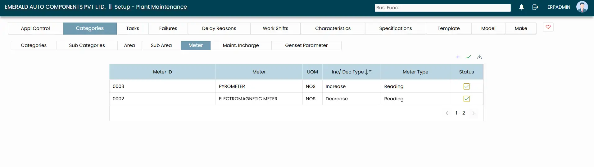

<div data-category="Plant Maintenance" data-title="Meter" data-updated="January 23, 2026" data-contributors="RoadmapIT" data-breadcrumb="Home,Plant Maintenance,Meter">
  <div class="page-content">
    <h5>Meter</h5>
    <p>Meter are different kinds of devices that are used to measure the flow of liquids, gases, or vapors in pipes or conduits.</p>
    <p>A unit of measurement is a standardized quantity of a physical property that is used to compare and measure different quantities of the same kind. For example meter, centimeter, inch, foot, etc.</p>
    <p>User can define the meter types and the UOM that match them. User can change the descriptions, but not the meter types, if there are any child records.</p>

    <h5>Navigation path:</h5>
    <p class="fs-6">Plant Maintenance \ Setup \ Setup-Plant Maintenance \ Category \ Meter</p>

    
    <ul style="list-style-type: none; align-content: center">
      <li class="mouse-icon">
        Click
        <i class="bi bi-plus fs-4 mx-2 text-primary"></i>
        to add
      </li>
      <li class="mouse-icon">Enter the Type Description.</li>
      <li class="mouse-icon">Enter/Select the UOM.</li>
      <li class="mouse-icon">Select Inc. /Dec. Type as Increase or Decrease.</li>
      <li class="mouse-icon">Select Any Option as Reading, Time Based, Weight Based.</li>
      <li class="mouse-icon">
        Click
        <i class="bi bi-check-lg fs-4 mx-1 text-success"></i>
        to save
      </li>
    </ul>
  </div>
</div>
